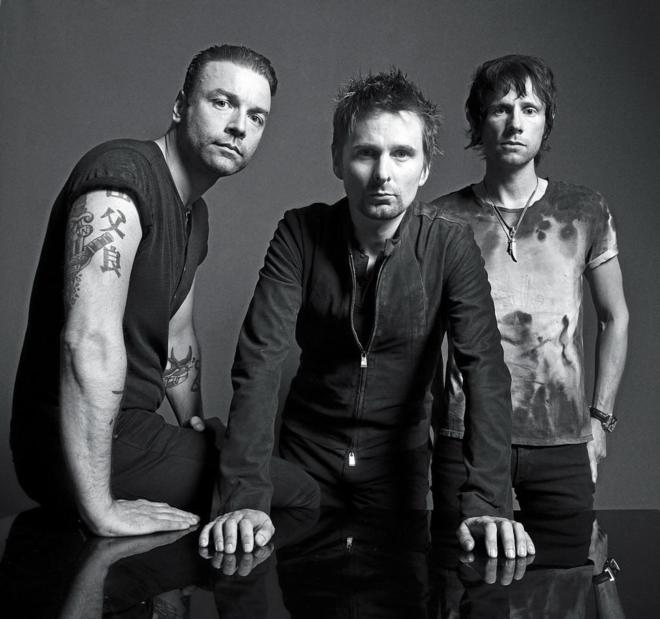
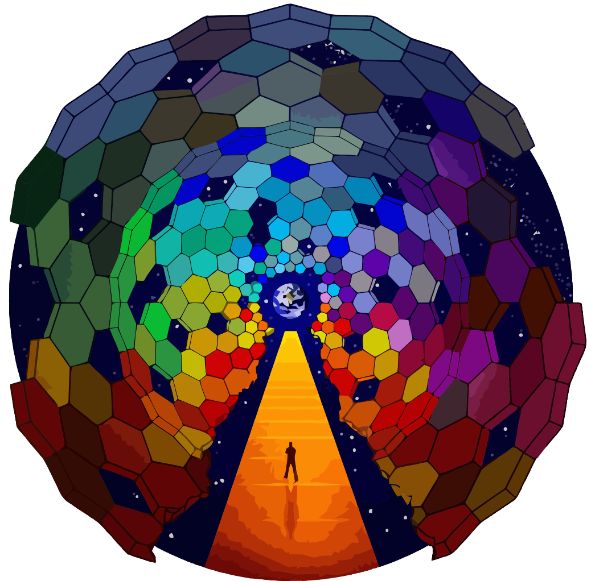

Descripción

Muse es una banda británica de rock alternativo formada en 1994 en Inglaterra. Desde su formación en la década de los 90, sus integrantes son: Matt Bellamy (compositor, voz, guitarra, teclados); Dominic Howard (batería, percusión); y Christopher Wolstenholme (bajo eléctrico, teclados, coros).
La banda es conocida por sus extravagantes espectáculos en vivo, por fusionar géneros musicales como el rock alternativo, rock espacial, rock progresivo, rock sinfónico y electrónica, además por los atípicos intereses de Bellamy en la conspiración global, la revolución, la astrofísica, vida extraterrestre, pensamientos humanos y la idea de un fin del mundo simbólico; temas que se ven reflejados en sus letras.
Último Lanzamiento


Próximos lanzamientos
Fecha
Nombre
n/a
Nuevo álbum
Redes sociales